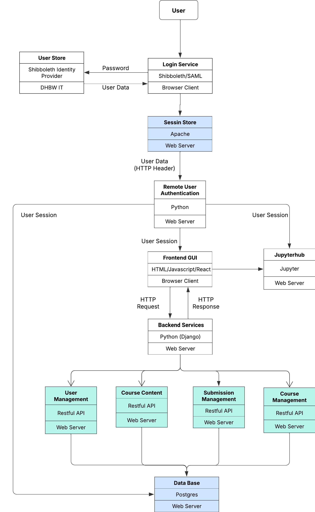

Die Webapplikation verwendet das Django Model-View-Control-Framework, um diese Single Kurs Web App aufzubauen. Kernfunktionalitäten von dieser Applikation werden durch RESTful API und Django Backend realisiert. Als Frontend verwenden wir HTML und JavaScript, um diese GUI zu gestalten. Für Datenbank verwenden wir Postgres, um die Daten für die Webapplikation zu speichern. Außerdem haben wir auch noch einen Remote-User-Authentication-Service innerhalb dieser Web-App entwickelt, um diese Userdaten aus Shibboleth zu bekommen. Sämtliche Code von dieser Applikation wird in GitHub-Repository gespeichert, und um das zu deployen, verwenden wir das Docker-Image vom ihm. Folgende Abbildung zeigt das grobe Systemdesign von dieser App.
